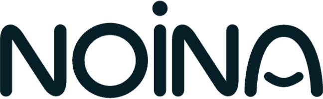
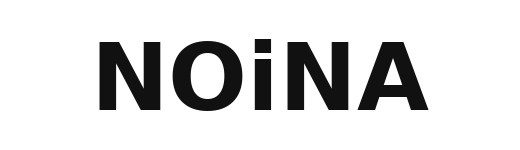

Noi Navve — Motion Designer, Broadcast Animator, and Visual Communication Lecturer. Interrupting your regular programming with playful concepts, polished motion design systems, and brands brought to life — one keyframe at a time.
Work spans motion designer, broadcast design, channel package, title sequence, 2D animation, After Effects, brand animation, explainer video, TV graphics, showreel, product animation, on-air graphics, UI animation, vector animation, Rive, Lottie.
Knesset TV, Channel 10, Aiways, WRC, PayBox, Kan Kids, Xealth, Vimeo, Discount, Kan 11, Bizzabo, yes, Rak BeHatzbaa, Kido, Folo, Noder.
Channel 01. I got the opportunity to design and animate for The Israeli parliament channel rebrand, after promotheus took part in designing the winning bid. With the new "kaf"/Knesset-plenary-hall logo design and the objective of making the Knesset feel more digital and connected in mind, I've worked on the news broadcast package, multiple shows intros and other knick knacks. Watch Knesset TV on Vimeo
Channel 02. An opening title sequence I made for the second season of the Israeli sitcom, "Fallen Hard". The bourgeoisie life is tumbling down! Watch Channel 10 on Vimeo
Channel 03. A short ID for Aiways, a chinese electric car manufacturer. It was fun experimenting with reaction diffusion simulation for the first time! I can't wait to mess around with it again. Watch Aiways on Vimeo
Channel 04. A little taste of the World Rally Championship rebrand we did in Promotheus, from real-time TV graphics & dynamic maps to social media integration and technical implementation. I was incharge of the motion theory, intros, bumpers, and other elements of the brand's tv & social package. Watch WRC on Vimeo
Channel 05. Promotional campaign for PayBox, a digital wallet and payment app, for TV and numerous social platforms. We had about 3 days per video - pretty stressful, but I'm happy with the end results. Watch PayBox on Vimeo
Channel 06. Opening sequence for a TV show package for "The Bumper-Sticker Poetry" on Kan Educational channel. A series of 10 minutes shorts, each one on the history and background of one iconic bumper-sticker. Watch Kan Kids on Vimeo
Channel 07. Promotional video for Xealth, a digital ordering and analytics platform for health vendors. Watch Xealth on Vimeo
Channel 08. A kind of showreel video, recapping all the standout projects I worked on in 2024 as part of the product creative team. Endless projects across a variety of content worlds, each with its own unique design and animation challenges. Watch Vimeo on Vimeo
Channel 09. Explainer video for Israel Bank Discount's Open Banking platform, for promoting innovation and new financial services using API and other stuff that are beyond my understanding. Watch Discount on Vimeo
Channel 10. Graphic promo kit for Kan's TV show "We'll meet again" about five secular people whose one of his/her family members have repented and are sent on a journey documenting the attempt to reconnect with that family member. Suuuper emotional. Watch Kan 11 on Vimeo
Channel 11. A video introducing Bizzabo's (an event experience OS) brand new app market. It was fun and exciting taking their latest rebrand and bringing it to life with movement and animation. Watch Bizzabo on Vimeo
Channel 12. An intro video for Vimeo's 2024 product conference in Miami. It was a blast creating a product-focused animation using Vimeo's design language, with a splash of Miami sunshine throughout. Watch Vimeo on Vimeo
Channel 13. An onscreen graphic package for yes, a direct broadcast satellite television provider in Israel. This brand design puts the content front and center across all of yes's home channels and digital platforms, from TV shows to movies, with a light cinematic flair. *(())* Watch yes on Vimeo
Channel 14. The results are in! An opening title sequence from a full graphic package made for "Only by Vote", a kids TV show on Kan Educational channel about what today's kids really think, with fun surveys & polls. The package includes on-screen titles, supers, wipers, a timer and the polls themselves, integrated with Arti's AR studio. Watch Rak BeHatzbaa on Vimeo
Channel 15. A sizzle video showcasing Kido's amazing and innovative projects. I absolutely loved my short time at Kido — thoughtful, seasoned design thinking leading to beautiful projects, all created by genuinely sweet people. ( ) Watch Kido on Vimeo
Channel 16. Meet Folo - the next generation of student diaries! A video I made for the app I designed for Kidstv. Had fun designing a complete app from scratch for the first time (grueling yet rewarding!), but nothing beats animating this wee fella. Watch Folo on Vimeo
Channel 17. For my and my partner's decade celebrations weddingish event, I decided to present my vows with a video, instead of reciting them with a shaky voice & sweaty palms. The color scheme of the entire event was inspired by my partner's favorite arcade game Pac-Man, and I had a blast experimenting with different animation techniques and design trends. That was the most passionate passion project I've had in a long time. Love you, Ba'alulu! ( ) Watch Noder on Vimeo

